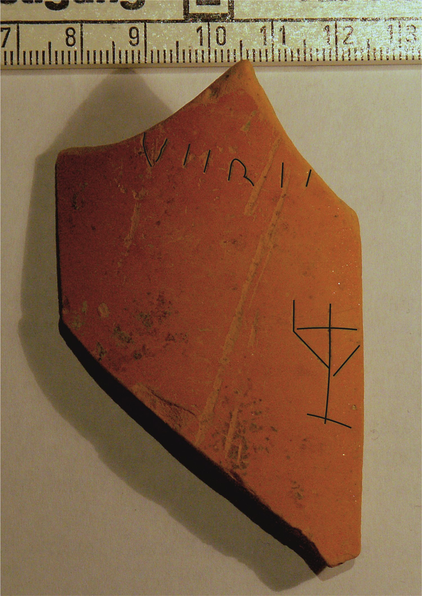
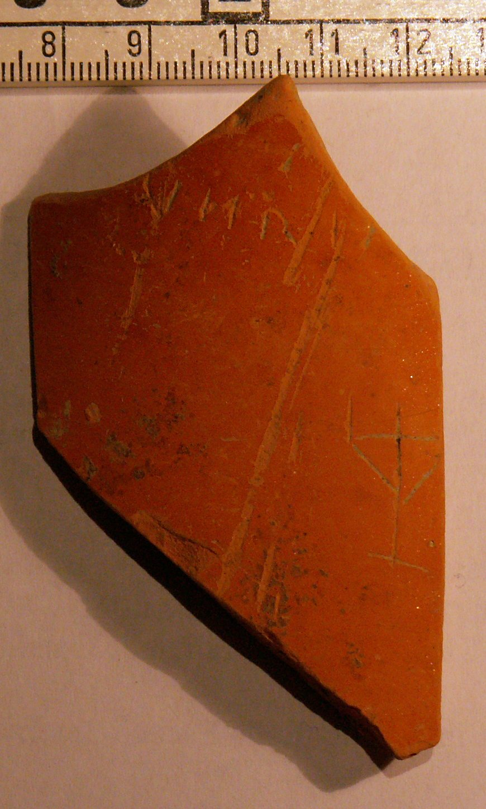

pompelo-018-tridente
Grafito de tridente sobre cerámica pigmentada (Pompelo, Plaza del Castillo, Pamplona, Navarra)
Pompelo (Pamplona, Navarra), Hispania citerior · s. II d.C.


Texto
Tridente (casi completo)1VERE[- - -]
Otras lecturas posibles
- VERI[- - -]
Comentario
Pertenece a un conjunto de seis tridentes de tipología poco habitual: entre el palo y la línea perpendicular aparecen otras dos líneas que refuerzan la estructura, y la herramienta parece contar con una base horizontal. Su diseño guarda semejanza con una tipología de candelabros, pero no es seguro que represente ese objeto.
Tridente asociado a la inscripción VERE[?---].
En el artículo de 2009 (nº 14) esta inscripción se publicó como VERI[?---] o VERE[---]. Los autores señalan que existen varios tridentes de este tipo en la Plaza del Castillo que podían tener también una función semejante a los nominales.
Descripción
- Soporte
- Fragmento de cerámica pigmentada que pertenece al cuello de un jarro de borde moldurado, forma U.1. Pasta anaranjada y barniz de buena calidad del mismo tono.
- Disposición
- Localización del grafito: Pared exterior de la pieza.
- Descripción del grafito
- Tridente casi completo del tipo descrito en el comentario. En este caso carece del trazo horizontal en la mitad inferior izquierda, que sí tienen los grafitos número 19 y 23.
- Datación
- s. II d.C.
- Lugar de origen
- Pompelo (Pamplona, Navarra), Hispania citerior
- Hallazgo
- Excavación de la Plaza del Castillo de Pamplona (2001-2003), sector 3. Según el contexto general de la excavación, las piezas aparecieron en un barrio artesanal. Los estratos están revueltos y no hay estratigrafía válida para fechar las piezas: la datación se basa en las formas cerámicas.
- Ubicación actual
- Almacén de Arqueología del Gobierno de Navarra
Bibliografía
- P. Ozcáriz Gil; M. Unzu, «Grafitos figurativos, palmas, tridentes y otros signos en cerámica romana de la Plaza del Castillo de Pamplona», Príncipe de Viana 253 (2011), pp. 79-95.
- M. Unzu; P. Ozcáriz Gil, «Grafitos nominales de la Plaza del Castillo de Pamplona», Los vascones de las fuentes antiguas: en torno a una etnia de la antigüedad peninsular (2009), pp. 499-512.